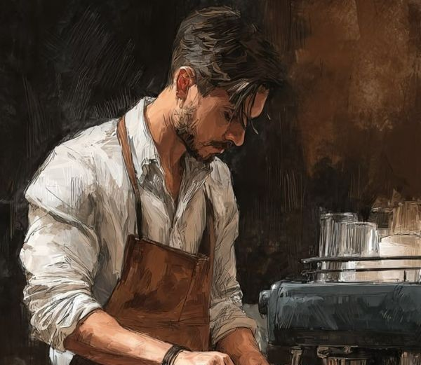
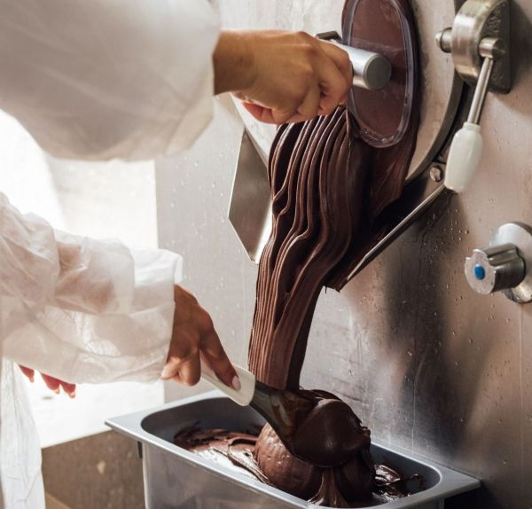
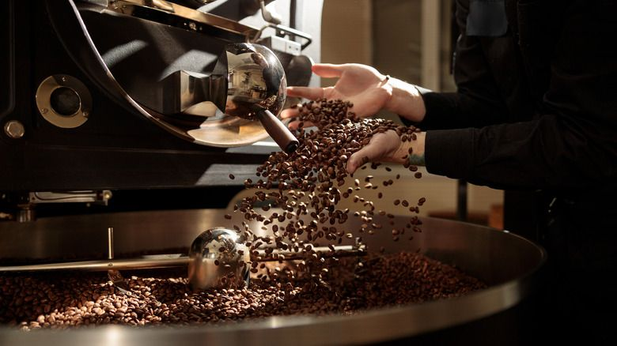

Макар че LUSSO отвори врати наскоро, нашата история започна много по-рано. Всичко тръгна от семейния архив на нашите основатели, които прекараха години в сърцето на Италия, за да изучат тайните на перфектното изпичане на кафето и автентичното джелато.

Всеки наш сладолед се приготвя на място, всеки ден.Не използваме готови сухи смеси или изкуствени оцветители. Нашата тайна е в детайлите: селектиран шамфъстък от Сицилия, истински швейцарски шоколад и свежо мляко от местни ферми. Резултатът е кремообразна текстура, която се топи в устата и оставя незабравим вкус.

Кафето в LUSSO не е просто сутрешно събуждане, то е ритуал. Ние подбираме 100% Specialty Арабика от малки, устойчиви плантации в Южна Америка и Африка. Зърната се изпичат бавно и прецизно, за да се разгърнат естествените им нотки на карамел, цитрус и шоколад. Когато баристата ни приготвя твоето кафе, той не просто натиска бутон – той превръща всяка капка в изкуство.
